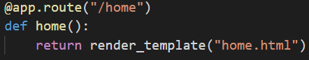
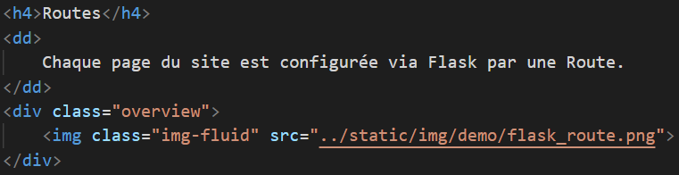

Fonctionnement général du site
Technos et framework
- FLASK
- c'est un framework de développement web en python qui facilitent la création des applications web.
- Le format HTML
- (Hypertext Markup Language ) contient le contenu et la structure de la page web. Le navigateur charge les annexes (les fichiers CSS, JS, les images..).
- Le format CSS
- (Cascading style sheets) décrit la présentation du document HTML . Le fichier CSS gère les couleurs, police et le positionnement du contenu .
- Boostrap
- une collection d'outils utliliser pour ajouter un design et un style à l'application. Permet d'incorporer les pages web réactive dans l'application web.
Backend

Frontend
